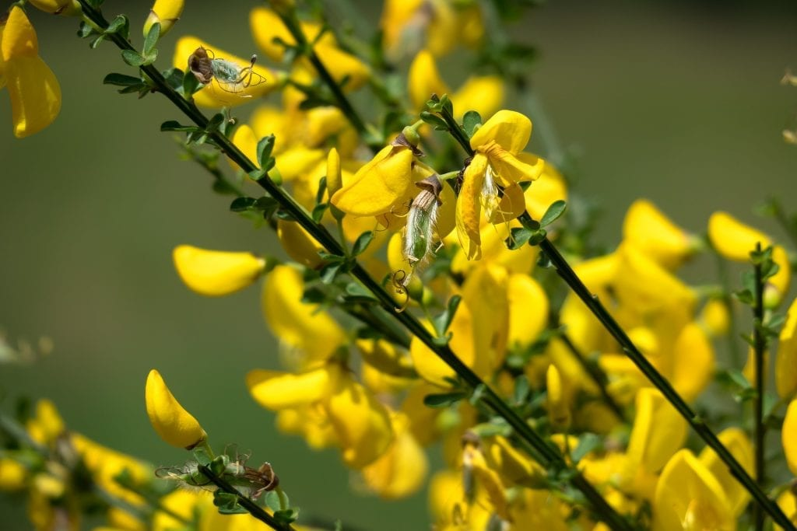
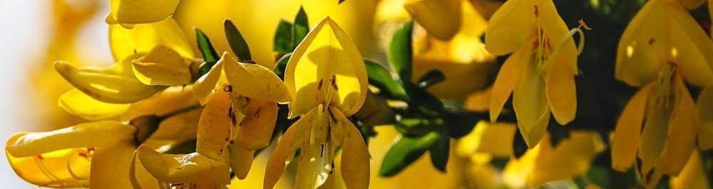

Ginestra
caratteristiche e utilizzi
Cura della Ginestra
Le ginestre fiorite sono piante molto rustiche e semplici, che crescono in ambienti caldi e secchi e amano il sole: posizionate all’ombra o in mezz’ombra, le piante cresceranno stentate e fioriranno poco. Si accontentano di terreni poveri, aridi e sabbiosi, raramente si ammalano e richiedono pochissime cure. Essendo dotate di un apparato radicale molto sviluppato e profondo, non richiedono interventi d’irrigazione, se non subito dopo la loro messa a dimora e nei periodi più caldi durante il primo anno d’impianto: le loro radici sono, infatti, in grado di assorbire la poca acqua presente in profondità. Tra gli insetti che colpiscono la ginestra fiorita, i più frequenti sono gli afidi, trasportati il più delle volte dalle formiche: questi minuscoli insetti, di colore nero o verde, si ammassano solitamente in colonie consistenti, imbrattando i fusticini e i fiori della pianta.
Utilizzi della Ginestra
Molte sono le tisane, presenti in commercio, che contengono i fiori essiccati di ginestra. Ma da essi si distilla anche l’olio essenziale, che viene usato per la preparazione dei profumi ad uso cosmetico e nell’industria alimentare. Fino agli anni Cinquanta a Sangineto le fibre tessili si ottenevano dalla pianta di ginestra. Fenici, Cartaginesi, Greci e Romani la usavano come pianta da fibra per produrre stuoie, corde ed altri manufatti. D’altronde il suo nome botanico che deriva dal greco “spartos” (corda) conferma il suo utilizzo per la realizzazione di tessuti grossolani. L’industria rurale moderna del tessuto ginestrino – sviluppata in diverse zone del Mediterraneo (Italia, Spagna, Albania) – farebbe pensare ad una lunga tradizione iniziata nel periodo romano e continuata ininterrottamente nel corso dei secoli.
La Ginestra in Cucina
Solitamente i fiori di ginestra vengono utilizzati in infusione per the e tisane rilassanti. I petali gialli decorano e possono arricchire di profumi una moltitudine di piatti, dalle insalate a ricette a base di pesce, dai dolci alle macedoniei. Da provare per esempio a cucinare un filetto di salmone, sul quale viene spolverizzato del sale in fiocchi e una manciata di fiori di ginestra. I boccioli della ginestra possono essere consevati sottaceto.
La Ginestra in Erboristeria
Efficace per purificare l’organismo, grazie anche alla proprietà emetica, che favorisce il vomito (ad esempio in caso di avvelenamento), questa pianta presenta diversi componenti utili. Come la scoparina, un flavonoide ad azione diuretica, l’acido tannico e caffeico, la luteina, e la sparteina, amica del cuore. È conosciuta per la sua azione contro ipotensione e sanguinamento gengivale. Ma viene anche utilizzata per contrastare mestruazioni abbondanti, ingrossamento della milza, calcoli renali e biliari, disturbi epatici e affezioni bronchiali. I soli fiori, in particolare, sono indicati contro i disturbi della minzione.
- Nome scientifico: Spartium junceum L.
- Famiglia: Fabaceae.
- Terreno ideale: Predilige i suoli aridi, sabbiosi. Può vegetare anche su terreni argillosi.
- pH ideale: Leggermente acido.
- Preparazione del terreno: Il terreno ideale per coltivare la Ginestra dev'essere ben drenato.
- Concimazione: Non necessita di concimazione.
- Quando seminare: Tra l'autunno e l'inizio della primavera.
